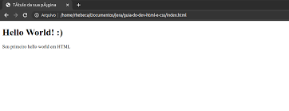

Como todos sabemos nada e facil neste mundo, então o sucesso e a soma de todo esforço concentrado em um unico ponto, eu ja estou quase dormindo e continuo escrevendo e codando sem parar
Mas como toda via, imagino que nada seja tao facil por exemplo, você sonha com um tenis, então você precisa trabalhar, para que possa, compralo, então podemos, tirar de base que todo sonho gera um sacrifio, sejam noites sem dormir, sejam noites (QUEBANDO A CABEÇA), as vezes uma coisa mais simples, pode fazer com que sua vontade de desistencia fale mais alto porem eu tenho um proposito de me tornar um dos melhores dev ja visto, e eu tenho total ciencia, que nesse jornada muitos desafios e testes de resiliencia fisica e mental estão por vir, mas os aguardo ansiosamente.